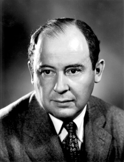

John von Neumann
Mathematician and physicist, 1903 to 1957

A Hungarian-born mathematician and physicist at the Institute for Advanced Study in Princeton. He worked on the Manhattan Project at Los Alamos, helped shape the ENIAC computer, chaired the Defense Department's Strategic Missile Evaluation Committee, and in 1955 became a commissioner of the Atomic Energy Commission. He died in February 1957. 1
He has no documented connection to UFOs, but his analysis of self-replicating machines gave its name to "von Neumann probes," a fixture of the debate over why no alien visitors have been confirmed. He was also one of "the Martians," the Hungarian émigré scientists about whom Leo Szilard joked that aliens were already here and "just call themselves Hungarians." Decades after his death, Philadelphia Experiment and Montauk Project lore cast him as the secret director of both. 2,3,4
Open in the interactive Watcher
Related
- Manhattan Project
- Atomic Energy Commission
- Los Alamos
- Fermi asks "Where is everybody?" Von Neumann probes and the Fermi paradox
Sources
- John von Neumann Wikipedia
- Self-replicating spacecraft Wikipedia
- The Martians (scientists) Wikipedia
- The Montauk Project: Experiments in Time Wikipedia